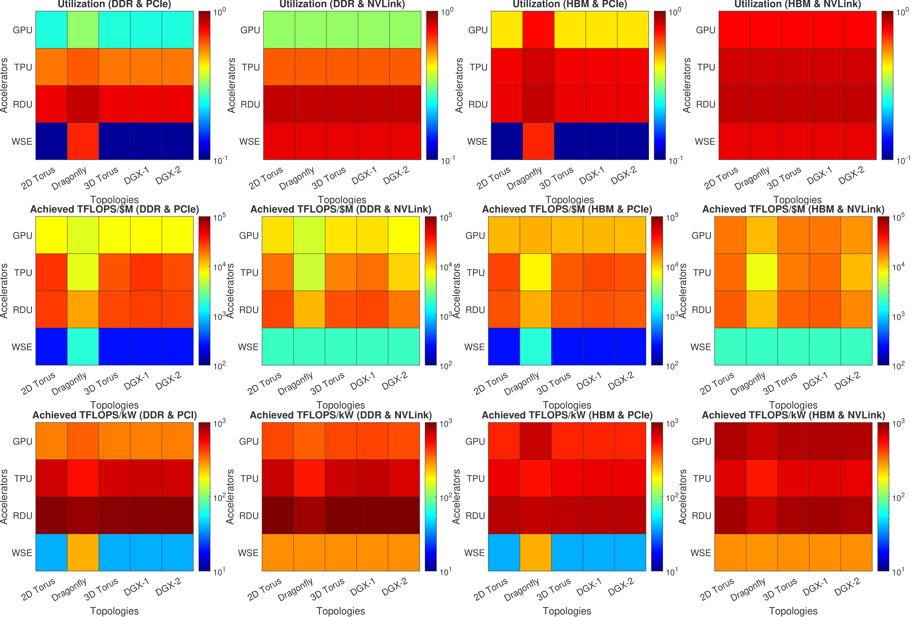
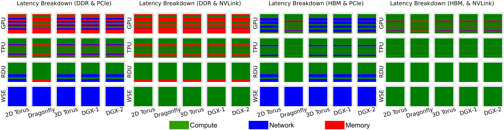
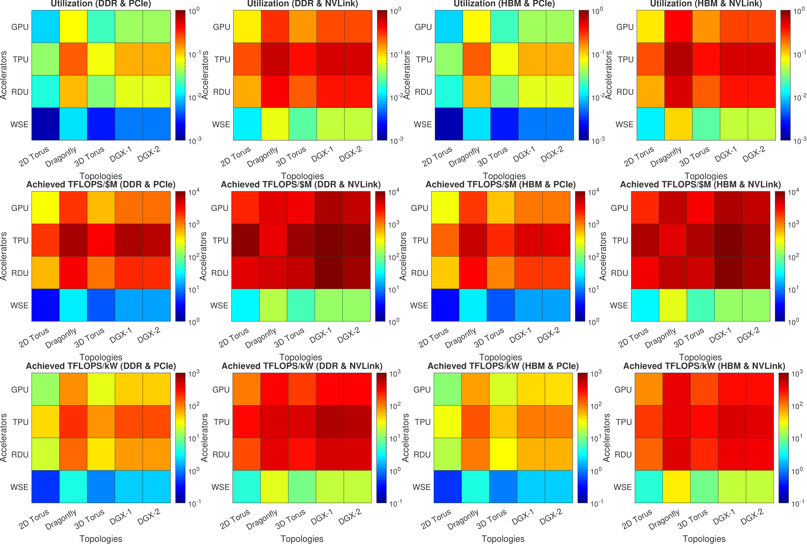
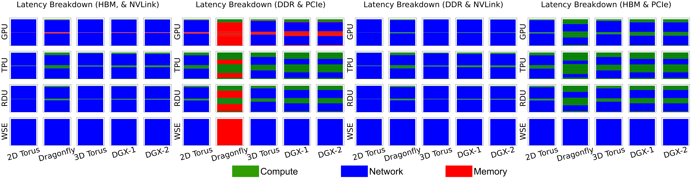
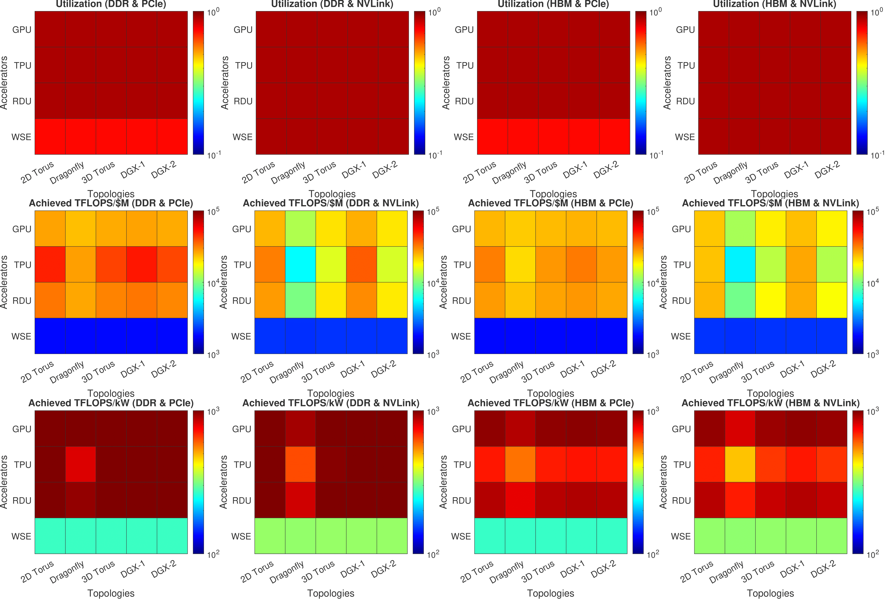
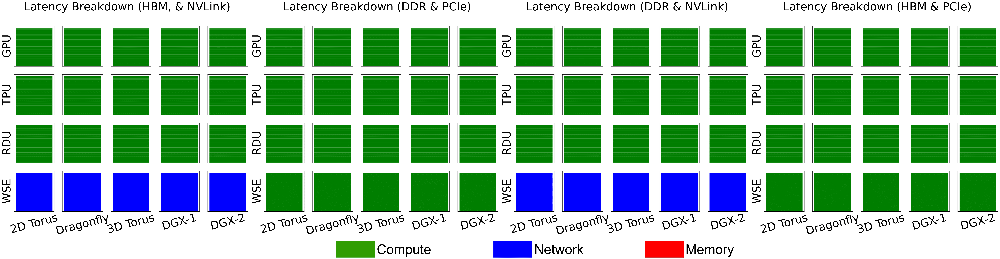
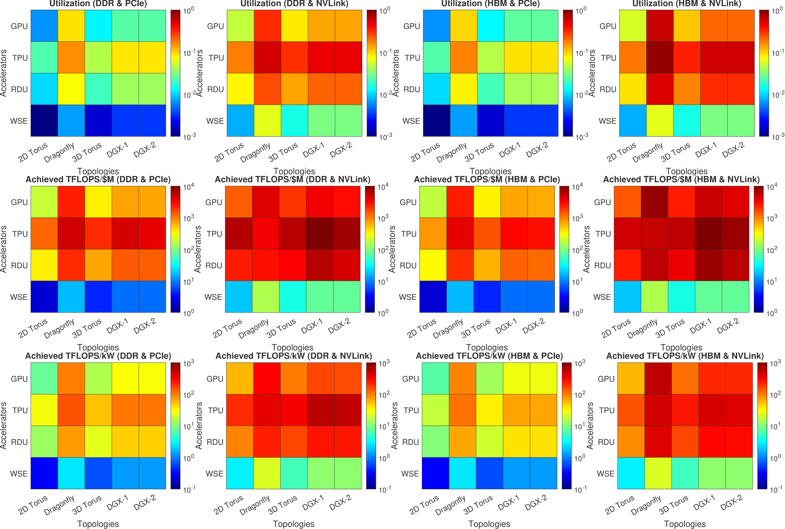
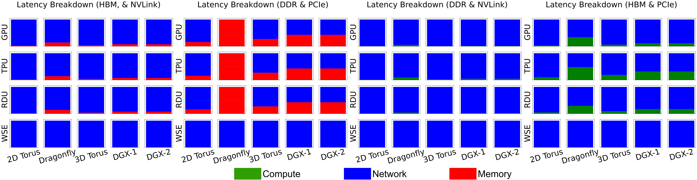

DFModel Design Space Exploration Results
Fig. 1: For GPT3 1T, heatmaps showing throughput utilization, cost efficiency, and power efficiency for a complete design space of four accelerators, five interconnection topologies, and four combinations of memory/interconnect technologies.

Fig. 2: For GPT3 1T, latency breakdown of each design point in the complete design space of four accelerators, five interconnection topologies, and four combinations of memory/interconnect technologies.

Fig. 3: For DLRM 793B, heatmaps showing throughput utilization, cost efficiency, and power efficiency for a complete design space of four accelerators, five interconnection topologies, and four combinations of memory/interconnect technologies.

Fig. 4: For DLRM 793B,, latency breakdown of each design point in the complete design space of four accelerators, five interconnection topologies, and four combinations of memory/interconnect technologies.

Fig. 5: For 5M x 5M matrix HPL, heatmaps showing throughput utilization, cost efficiency, and power efficiency for a complete design space of four accelerators, five interconnection topologies, and four combinations of memory/interconnect technologies.

Fig. 6: For 5M x 5M matrix HPL, latency breakdown of each design point in the complete design space of four accelerators, five interconnection topologies, and four combinations of memory/interconnect technologies.

Fig. 7: For 1T-point FFT, heatmaps showing throughput utilization, cost efficiency, and power efficiency for a complete design space of four accelerators, five interconnection topologies, and four combinations of memory/interconnect technologies.

Fig. 8: For 1T-point FFT, latency breakdown of each design point in the complete design space of four accelerators, five interconnection topologies, and four combinations of memory/interconnect technologies.
